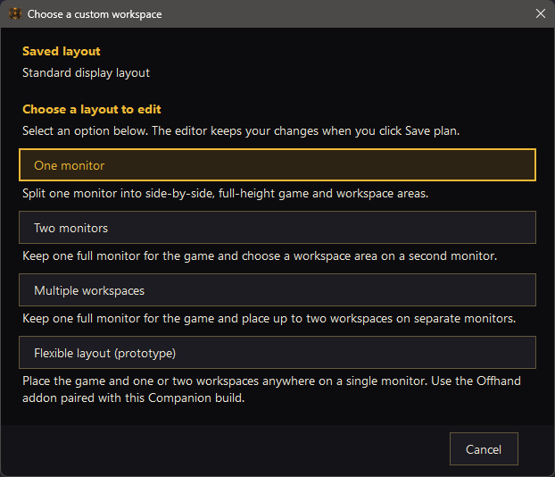
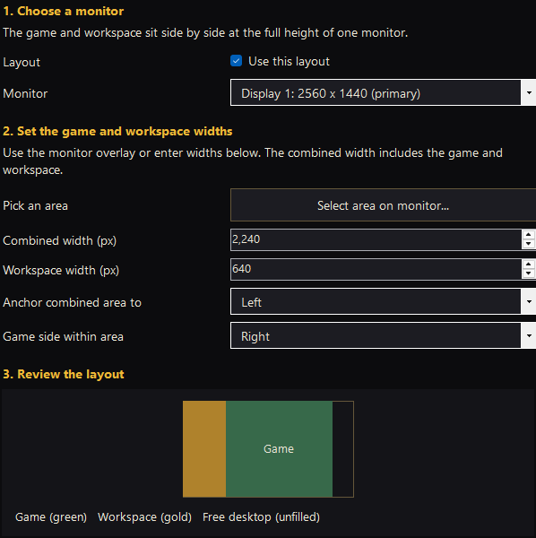
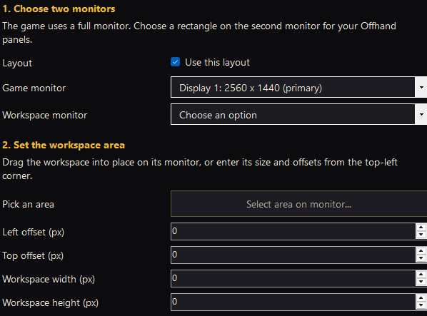
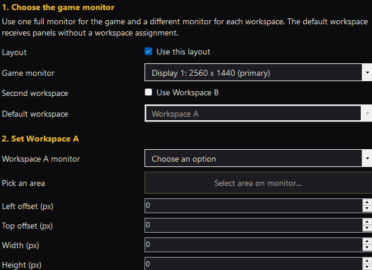
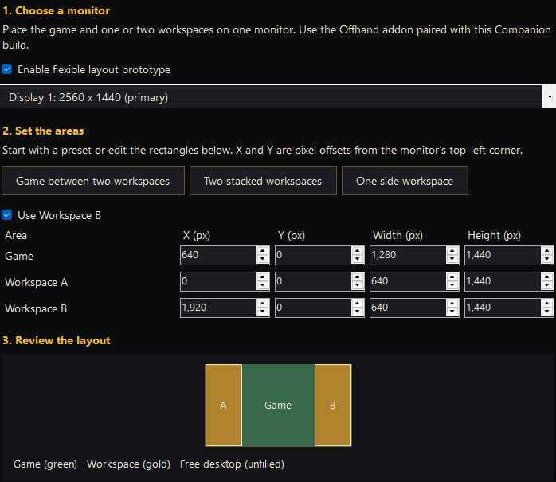
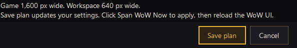

Install Offhand Companion from Microsoft Store and the Offhand addon for the WoW client you play. Keep both up to date. A Store update does not update the addon.
Before changing the canvas, save a copy of your Blizzard Edit Mode layout and back up UI addon profiles. Set WoW to ordinary Windowed mode, enter the game world, and leave Auto-span WoW on launch off.
Choose the area you want
Open Workspace layout in Companion. Choose one mode, then follow the shared save-and-apply steps below.
See the layout chooser

Choose the editor for your arrangement. The saved layout here is Standard display layout; returning from an active custom plan also offers Use standard display layout.
One monitor

Game and workspace widths, anchor and game side. The preview shows the occupied area and free desktop.
Choose this for a side-by-side split with your own game and workspace widths. Both areas use the monitor's full height. Select the monitor, game side, occupied area and workspace width in the editor.
Example: reserve a narrow workspace beside a wider game area on an ultrawide. For an equal 32:9/32:10 split, standard setup is simpler.
Two monitors

Choose different game and workspace monitors, then set the workspace area. This capture shows the controls before a workspace monitor is selected.
Keep one full display for the game and choose a rectangular workspace on a second display. Select distinct game and workspace monitors, then set the workspace's position and size.
Example: use only the lower portion of a portrait screen for WoW panels, leaving the remaining desktop available.
Multiple workspaces

Choose the game screen, default workspace and workspace monitors. This capture shows the controls before workspace selection is complete.
Keep a full game monitor and define one or two workspace regions on separate displays. Choose the game screen, workspace A, optional workspace B, and Default workspace.
The default workspace is the default destination when a panel has no more specific placement. Give each area enough room for the panels you intend to use.
Flexible layout (prototype)

Enable the layout, choose a preset, and review the game and workspace rectangles. Example dimensions are not required settings.
This advanced option places the game and one or two workspace rectangles on a single monitor. Choose a preset or enter the rectangles, then inspect the preview for position, size and gaps.
The published control is labelled prototype. It requires the paired addon. Begin with a simpler mode unless you need this arrangement.
How to select an area visually
Where available, choose Select area on monitor. Drag the area to move it or drag its edges to resize it. Arrow keys move the area; Ctrl + arrow moves one pixel and Shift + arrow resizes. Press Enter to accept or Esc to return to the editor.
Editor dimensions use physical pixels. Check which monitor is selected before entering offsets. The preview shows the occupied game/workspace areas and remaining desktop. Areas must fit their selected displays without overlapping; resolve any validation message before saving.
Save the plan, then apply it
Saving settings, moving WoW, and loading the new geometry inside WoW are three separate actions.

Save plan keeps the settings. Apply them with Span WoW Now, then reload inside WoW.
Review and Save plan. Check the game screen, each workspace, and the preview. Save plan keeps the settings; it does not resize WoW.
Click Span WoW Now. Review any display confirmation before accepting. Check that the visible game and workspace areas match the plan.
Reload inside WoW. Type /reload, or use Reload UI in /offhand guide, so the addon reads the applied geometry. Companion does not type this command for you.
Confirm and calibrate. In the guide choose Use Companion, then Confirm placement. Finish the calibration and HUD instructions. Wait for HUD setup to succeed before arranging panels.
Every later launch: custom layouts use Span WoW Now each time. Auto-span is for standard layouts. Reapply a changed plan and reload before checking panel positions. Keep Companion open if you need its remembered Restore Window state or active recovery.
Know which layout you are saving
Each kind of saved layout has a different purpose. On small screens, scroll sideways to compare.
Where
What it saves
What it does not replace
Companion: Workspace profiles
Named Multiple workspaces display plans, including selected monitors and areas.
Addon panel arrangement and Blizzard HUD editing.
Addon: Profiles, workspace layouts
Panel placement, routing and workspace appearance within the current general addon profile.
Physical display geometry or calibration.
Addon: general profiles
The broader Offhand preferences containing those workspace layouts.
Companion's display plans.
Blizzard Edit Mode
Protected HUD controls such as action bars and unit frames.
Ordinary workspace panels or native window placement.
Open Workspace profiles for named plans, or Workspace layout to edit areas. The layout button also identifies the current mode.
For a reusable Multiple workspaces plan, open Workspace profiles... and save it under a useful name. Changes in that dialog remain staged until Save changes. To switch, choose the plan, click Load selected, then Save changes. Apply it using the save-and-apply sequence.
For example, save a plan called “Map and inventory”. Arrange panels in WoW after applying it. When the paired addon first sees a named plan, it creates an associated workspace layout from the current one. Later applications can restore that plan's associated layout. You can still select a different in-game workspace layout manually.
A saved plan needs its configured monitors at the saved resolutions. A missing or changed display requires review. Deleting a Companion plan does not delete its in-game workspace layout.
Arrange panels and appearance inside WoW
Open /offhand. In Workspace, choose destinations for supported panel groups such as Map, Character, Spells, Collections, Achievements and Journal. A panel you drag manually keeps that placement. Use routing again asks before clearing that group's manual positions. Bags, chat and third-party panels retain their existing behavior.
In Themes, each active region can inherit the global appearance or use its own theme, background and image fit. These choices style the workspace canvas, not Blizzard's panels. Inactive regions cannot be edited.
For a custom background, open Background Studio and preview Custom dimensions using that region's width and height from Companion. Preview each differently shaped region separately. Studio preview dimensions do not resize WoW. Install the generated media package beside Offhand and fully restart WoW before selecting the installed image.
Save plan only stores settings. Click Span WoW Now, then reload the WoW UI. Check the active plan and each visible region before moving panels.
A monitor is missing or the plan will not load
Reconnect the configured display and check its Windows resolution. Use Identify Displays to review roles. Do not repeatedly apply an old plan to an unfamiliar screen arrangement. Use Restore Window to return to a usable window.
Return to standard displays
Open Workspace layout and choose Use standard display layout. Review the suggested displays and save. Named plans stay saved. Apply the standard span and reload. Restore Window alone does not erase the custom plan.
A panel is missing or in the wrong area
First verify the applied geometry and reload. Then check its route and any manual placement. Follow the targeted panel recovery steps before gathering every window or rebuilding the HUD.
For support, include Companion and addon versions, your WoW client, the plan preview, and what happened after Span WoW Now and reload. Use Copy Display Diagnostics in Companion and /offhand diag in WoW. Remove private account, character or chat details before sharing.